Parking management in institutional and commercial campuses is still largely a manual operation: an attendant writes a vehicle number in a register, walks the floor to find a free bay, and computes the charge by hand at the exit. The process is slow, error-prone, and gives the driver no visibility into where space is available. Dedicated hardware — barrier gates, inductive loop sensors, RFID readers — solves the problem but is expensive to procure and to maintain for a single campus installation.
This project delivers a Smart Parking Management System as a desktop application that achieves the same operational goals with no external hardware at all. It is built with Java Swing for the presentation layer, JDBC for data access, and MySQL 8 as the relational back end, organised in a strict model–view–controller structure with one Data Access Object per relation.
The system provides two portals. The customer portal lets a driver self-register,
receive an automatically generated identifier of the form USR-XXXX, register one
or more vehicles, and view the parking sessions that are currently active against them. The
employee portal drives the two gates: at the entry gate the attendant looks up a
customer by identifier, picks one of that customer's registered vehicles, and either lets the
system allocate the first free bay automatically or selects a bay from a visual
4×4 pillar-section grid that colours every section by live availability. At the
exit gate the same identifier is used to retrieve the open session, compute the charge and
settle it, which closes the ticket and releases the bay in a single database transaction.
Billing follows the tariff card of the facility: parking is free for the first sixty minutes, every commenced hour thereafter is charged at ₹40 for a two-wheeler and ₹80 for a four-wheeler. The rate is resolved from the vehicle type recorded in the database, so a customer who brings a different vehicle on a later visit is charged correctly without any change to the application.
The database is normalised to third normal form across six relations — Users,
Vehicles, Employees, Floors, ParkingSlots
and ParkingTickets — with foreign keys enforced by InnoDB. The seeded
installation models a three-floor facility with 144 bays (72 four-wheeler and 72
two-wheeler), 16 pillar sections per floor, 16 customer accounts and 28 registered vehicles.
Availability is derived from the slot table rather than stored as a counter, so concurrent
gate operations can never double-allocate a bay.
The application was validated with a 19-check integration test suite executed against the live database, covering identifier generation, duplicate-vehicle rejection, slot allocation, double-allocation prevention, fee boundaries and the full entry–exit lifecycle. All checks passed, and the test data was rolled back afterwards.
| Abstract | 2 | |
| 1. Introduction | 4 | |
| 1.1 Scope of the Work | 4 | |
| 1.2 Product Scenarios | 5 | |
| 2. ER Diagram | 6 | |
| 3. Relational Schema Diagram | 7 | |
| 4. Relational Schema Tables | 8 | |
| 5. SQL & DDL Queries | 11 | |
| 6. Sample DML Queries | 14 | |
| 7. Screenshots of Frontend and Backend | 16 | |
| 7.1 Frontend — customer and gate screens | 16 | |
| 7.2 Backend — database tables | 22 | |
| 8. Conclusion | 27 | |
| 9. References | 28 |
Parking is an inventory problem disguised as real estate. A facility has a fixed number of bays, each bay can hold one vehicle at a time, and every vehicle that enters must eventually leave and be billed. When this inventory is tracked on paper, three failures follow almost immediately: bays are double-booked because the register is out of date, revenue leaks because the elapsed time is estimated rather than measured, and customers queue at the gate while an attendant walks the floor to find a space.
This project replaces the register with a relational database and puts a thin, purpose-built desktop application in front of it. The application is deliberately hardware-free: allocation, occupancy and billing are all derived from rows in MySQL, so the system can be evaluated, demonstrated and graded on an ordinary laptop. Every screen in the application reads from and writes to the database at the moment it is used — there is no in-memory mock layer and no pre-computed report.
The scope below is what the delivered application actually does, verified against the running build.
| Area | Included in this project |
|---|---|
| Customer registration | Self-service sign-up from the login screen. The system generates the next identifier in the
USR-XXXX range and registers the customer's first vehicle inside the same transaction. |
| Vehicle registry | Each customer may hold several vehicles, each with a number plate and a type
(2W / 4W). Duplicate plates are rejected across the whole facility. |
| Authentication | Separate authentication for customers and for employees. Employees are provisioned by the administrator; there is no employee self-registration screen. |
| Entry gate | Lookup by customer identifier, vehicle selection from the vehicles registered against that customer, and either automatic allocation of the first free bay of the correct type or manual selection from the visual pillar grid. |
| Occupancy view | A 4×4 grid of pillar sections per floor, refreshed from the database, showing the number of free bays in each section or FULL when none remain. |
| Exit gate and billing | Retrieval of the open session, duration calculation, tariff resolution by vehicle type, settlement, and an itemised receipt. Settlement closes the ticket and frees the bay atomically. |
| Customer dashboard | A live list of the customer's active sessions (ticket, vehicle, floor, pillar section and entry time) that empties automatically once the vehicle has exited. |
| Out of scope | Barrier-gate hardware, ANPR cameras, RFID tags, online payment gateways, Native mobile clients and reservation of a specific bay in advance. |
Five scenarios describe every interaction the system supports. They are listed in the order a real customer would experience them, and each corresponds directly to screens shown in Section 7.
A driver opens the customer portal and fills in a name, a password, a number plate and the vehicle type. Submitting the form runs one transaction that generates the next identifier, inserts the customer, and inserts the first vehicle. The generated identifier is shown in a confirmation dialog and is required at the gate, so the dialog warns the customer to keep it.
The attendant types the customer identifier. The system resolves the customer, lists the vehicles registered to that customer, and defaults to automatic allocation. Confirming inserts a parking ticket, marks the chosen bay occupied, and prints an entry receipt with the ticket number, floor, pillar section and timestamp.
Switching the allocation mode to Manual reveals the pillar grid for the selected floor. Every section is drawn from live counts: a green card reports how many bays of the required type are still free, a red card reports FULL. Selecting a section outlines it in amber; a section that fills up between the refresh and the confirmation is re-checked inside the transaction and rejected rather than double-allocated.
At the exit gate the attendant searches the same identifier. The system finds the open ticket, computes the elapsed time and applies the tariff: nothing for the first hour, then every commenced hour at the rate for that vehicle's type. Confirming the payment writes the exit timestamp and the amount, and releases the bay. The receipt itemises the rate, the billable hours and the total.
From the customer portal the driver logs in with the identifier and password created in Scenario 1 and sees the active session — vehicle, floor, pillar section and entry time. The list is populated from the database on every login and becomes empty the moment the vehicle has exited, so no stale state is ever displayed.
The entity–relationship model contains six entity types. Users and
Vehicles describe the customer side, Employees describes the staff who
operate the gates, Floors and ParkingSlots describe the physical
facility, and ParkingTickets is the associative entity that records one parking
session. Every relationship in the diagram is one-to-many with the foreign key on the
many side, which is exactly how it is implemented in the schema.
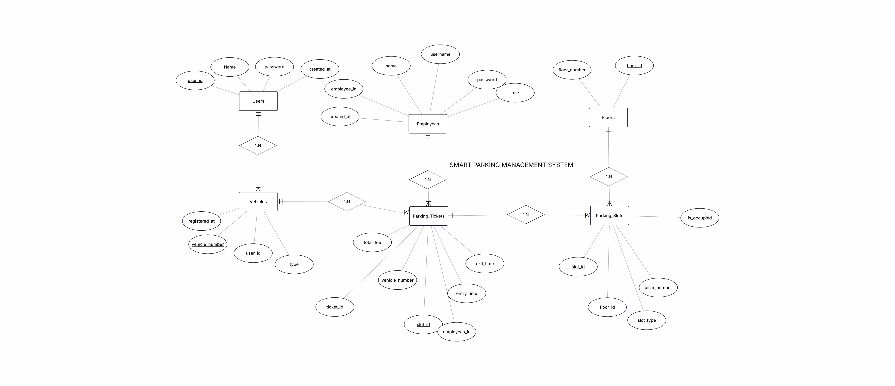
| Relationship | Rule | Participation | Implementation |
|---|---|---|---|
| Users → Vehicles | 1 : N | A vehicle belongs to exactly one customer; a customer may hold many vehicles. | Vehicles.user_id references Users.user_id |
| Vehicles → ParkingTickets | 1 : N | A vehicle accumulates one ticket per visit. | ParkingTickets.vehicle_number references Vehicles.vehicle_number |
| Employees → ParkingTickets | 1 : N | Every ticket records the attendant who issued it. | ParkingTickets.employee_id references Employees.employee_id |
| Floors → ParkingSlots | 1 : N | Each bay belongs to exactly one floor. | ParkingSlots.floor_id references Floors.floor_id |
| ParkingSlots → ParkingTickets | 1 : N | A bay is reused across visits and therefore appears on many tickets, but at most one open ticket at a time. | ParkingTickets.slot_id references ParkingSlots.slot_id |
Mapping the ER model to relations produces six tables. Each entity becomes a table, each one-to-many relationship is absorbed by placing the primary key of the one side into the many side as a foreign key, and the ticket entity keeps its own surrogate key because a single vehicle and a single bay can legitimately appear on many tickets over time.
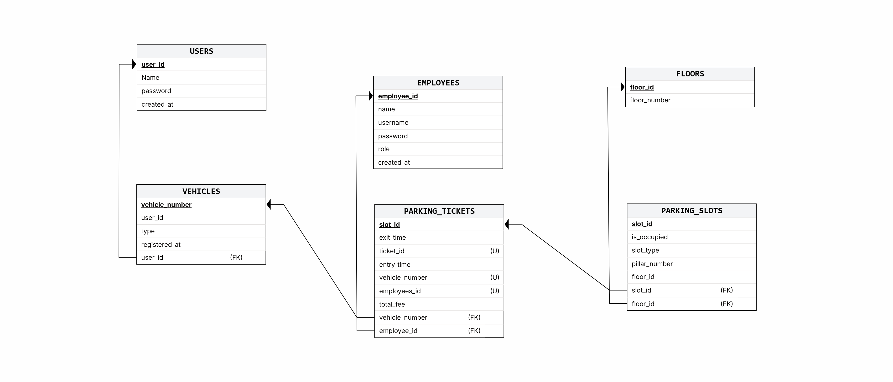
All six relations are in third normal form. Every attribute is atomic (1NF) — the
number of bays is not stored as a comma-separated list, and the vehicle type is a constrained
ENUM rather than free text. Every non-key attribute depends on the whole primary key
(2NF); in practice all primary keys are single columns, so this holds by construction. Finally
there are no transitive dependencies (3NF): the floor number appears only in Floors
and is reached from a slot by join, and the tariff is not stored at all because it is a function
of the vehicle type, which lives in Vehicles.
Occupancy is intentionally derived rather than duplicated. The only stored fact is
ParkingSlots.is_occupied; the number of free bays in a section is computed with a
grouped COUNT. Storing a per-section counter as well would introduce a transitive
dependency and a second source of truth that could drift from the slot rows.
The six relations below are documented exactly as they exist in the deployed database; the
column definitions, defaults and foreign keys were read from INFORMATION_SCHEMA at
the time this report was generated.
One row per customer account. The identifier is generated by the application in the USR-XXXX range and is the credential the customer presents at the gate.
| Key | Column | Type | Null | Default | References |
|---|---|---|---|---|---|
| PK | user_id | varchar(10) | NOT NULL | — | |
name | varchar(100) | NOT NULL | — | ||
password | varchar(100) | NOT NULL | — | ||
created_at | timestamp | NOT NULL | CURRENT_TIMESTAMP |
One row per registered vehicle. A customer may register several vehicles, which is why the foreign key points at Users rather than the plate being part of the customer key.
| Key | Column | Type | Null | Default | References |
|---|---|---|---|---|---|
| PK | vehicle_number | varchar(20) | NOT NULL | — | |
| FK | user_id | varchar(10) | NOT NULL | — | users(user_id) |
type | enum('2W','4W') | NOT NULL | — | ||
registered_at | timestamp | NOT NULL | CURRENT_TIMESTAMP |
Gate staff accounts. Employees are provisioned by the administrator; the role column distinguishes a manager from an attendant.
| Key | Column | Type | Null | Default | References |
|---|---|---|---|---|---|
username | varchar(50) | NOT NULL | — | ||
password | varchar(100) | NOT NULL | — | ||
role | varchar(30) | NOT NULL | Attendant | ||
created_at | timestamp | NOT NULL | CURRENT_TIMESTAMP |
The physical floors of the facility. Floor numbering is stored as text so labels such as "Ground" or "B1" are possible without a schema change.
| Key | Column | Type | Null | Default | References |
|---|---|---|---|---|---|
| PK | floor_id | int | NOT NULL | — | |
floor_number | varchar(20) | NOT NULL | — |
One row per physical bay. A bay is identified by its floor and pillar section, and its type restricts which vehicles may occupy it. is_occupied is the single source of truth for availability.
| Key | Column | Type | Null | Default | References |
|---|---|---|---|---|---|
| PK | slot_id | int | NOT NULL | — | |
floor_id | int | NOT NULL | — | ||
pillar_section | varchar(10) | NOT NULL | — | ||
slot_type | enum('2W','4W') | NOT NULL | — | ||
is_occupied | tinyint(1) | NOT NULL | 0 |
The ticket relation is the only one that grows without bound during operation. Its composite
index on (vehicle_number, exit_time) keeps the "is this vehicle already parked?"
check and the active-session lookup equally cheap as history accumulates.
One row per parking session. exit_time and total_fee are NULL while the session is open, so an active session is simply a row with a NULL exit_time.
| Key | Column | Type | Null | Default | References |
|---|---|---|---|---|---|
| PK | ticket_id | int | NOT NULL | — | |
| FK | vehicle_number | varchar(20) | NOT NULL | — | vehicles(vehicle_number) |
| FK | slot_id | int | NOT NULL | — | parkingslots(slot_id) |
| FK | employee_id | int | NOT NULL | — | employees(employee_id) |
entry_time | datetime | NOT NULL | CURRENT_TIMESTAMP | ||
exit_time | datetime | NULL | — | ||
total_fee | decimal(10,2) | NULL | — |
The database is created from a single script. The statements below are the
exact DDL used by the deployed schema, including the storage engine, character set and every
referential constraint. Foreign keys use ON UPDATE CASCADE so a corrected key
propagates, and ON DELETE RESTRICT so history cannot be orphaned by deleting a
customer, vehicle or bay that still has tickets.
CREATE DATABASE smart_parking
DEFAULT CHARACTER SET utf8mb4
COLLATE utf8mb4_unicode_ci;
USE smart_parking;
CREATE TABLE Users (
user_id VARCHAR(10) NOT NULL,
name VARCHAR(100) NOT NULL,
password VARCHAR(100) NOT NULL,
created_at TIMESTAMP NOT NULL DEFAULT CURRENT_TIMESTAMP,
PRIMARY KEY (user_id)
) ENGINE=InnoDB DEFAULT CHARSET=utf8mb4 COLLATE=utf8mb4_unicode_ci;
CREATE TABLE Vehicles (
vehicle_number VARCHAR(20) NOT NULL,
user_id VARCHAR(10) NOT NULL,
type ENUM('2W', '4W') NOT NULL,
registered_at TIMESTAMP NOT NULL DEFAULT CURRENT_TIMESTAMP,
PRIMARY KEY (vehicle_number),
INDEX idx_vehicles_user (user_id),
CONSTRAINT fk_vehicles_user
FOREIGN KEY (user_id) REFERENCES Users(user_id)
ON UPDATE CASCADE
ON DELETE RESTRICT
) ENGINE=InnoDB DEFAULT CHARSET=utf8mb4 COLLATE=utf8mb4_unicode_ci;CREATE TABLE Employees (
employee_id INT NOT NULL AUTO_INCREMENT,
username VARCHAR(50) NOT NULL UNIQUE,
password VARCHAR(100) NOT NULL,
role VARCHAR(30) NOT NULL DEFAULT 'Attendant',
created_at TIMESTAMP NOT NULL DEFAULT CURRENT_TIMESTAMP,
PRIMARY KEY (employee_id)
) ENGINE=InnoDB DEFAULT CHARSET=utf8mb4 COLLATE=utf8mb4_unicode_ci;
CREATE TABLE Floors (
floor_id INT NOT NULL AUTO_INCREMENT,
floor_number VARCHAR(20) NOT NULL UNIQUE,
PRIMARY KEY (floor_id)
) ENGINE=InnoDB DEFAULT CHARSET=utf8mb4 COLLATE=utf8mb4_unicode_ci;
CREATE TABLE ParkingSlots (
slot_id INT NOT NULL AUTO_INCREMENT,
floor_id INT NOT NULL,
pillar_section VARCHAR(10) NOT NULL,
slot_type ENUM('2W', '4W') NOT NULL,
is_occupied BOOLEAN NOT NULL DEFAULT FALSE,
PRIMARY KEY (slot_id),
INDEX idx_slots_floor (floor_id),
INDEX idx_slots_availability (slot_type, is_occupied),
INDEX idx_slots_pillar (floor_id, pillar_section, slot_type),
CONSTRAINT fk_slots_floor
FOREIGN KEY (floor_id) REFERENCES Floors(floor_id)
ON UPDATE CASCADE
ON DELETE RESTRICT
) ENGINE=InnoDB DEFAULT CHARSET=utf8mb4 COLLATE=utf8mb4_unicode_ci;CREATE TABLE ParkingTickets (
ticket_id INT NOT NULL AUTO_INCREMENT,
vehicle_number VARCHAR(20) NOT NULL,
slot_id INT NOT NULL,
employee_id INT NOT NULL,
entry_time DATETIME NOT NULL DEFAULT CURRENT_TIMESTAMP,
exit_time DATETIME NULL DEFAULT NULL,
total_fee DECIMAL(10,2) NULL DEFAULT NULL,
PRIMARY KEY (ticket_id),
INDEX idx_tickets_vehicle (vehicle_number),
INDEX idx_tickets_active (vehicle_number, exit_time),
INDEX idx_tickets_slot (slot_id),
CONSTRAINT fk_tickets_vehicle
FOREIGN KEY (vehicle_number) REFERENCES Vehicles(vehicle_number)
ON UPDATE CASCADE
ON DELETE RESTRICT,
CONSTRAINT fk_tickets_slot
FOREIGN KEY (slot_id) REFERENCES ParkingSlots(slot_id)
ON UPDATE CASCADE
ON DELETE RESTRICT,
CONSTRAINT fk_tickets_employee
FOREIGN KEY (employee_id) REFERENCES Employees(employee_id)
ON UPDATE CASCADE
ON DELETE RESTRICT
) ENGINE=InnoDB DEFAULT CHARSET=utf8mb4 COLLATE=utf8mb4_unicode_ci;
| Index | Relation | Purpose |
|---|---|---|
| PRIMARY | all six relations | Unique row identity; every foreign key targets a primary key. |
idx_vehicles_user | Vehicles | Loads the vehicle list for a customer at the entry gate. |
idx_slots_availability | ParkingSlots | Makes the automatic allocation lookup (slot_type + is_occupied) a range scan instead of a table scan. |
idx_slots_pillar | ParkingSlots | Backs the per-section free-bay counts that colour the pillar grid. |
idx_tickets_active | ParkingTickets | Detects "vehicle already parked" and finds open sessions without scanning history. |
idx_tickets_slot | ParkingTickets | Supports joins from the bay side and future occupancy reporting. |
Three kinds of DML reach the database at runtime: the inserts performed during registration, the inserts and updates that implement the two gates, and the reads that populate the dashboards. The statements below are the ones the application actually issues, shown with representative values.
-- The next identifier is derived from the highest existing suffix.
SELECT COUNT(*) FROM Users WHERE user_id = ?;
INSERT INTO Users (user_id, name, password) VALUES ('USR-8401', 'Nisha Verma', 'nisha@123');
INSERT INTO Vehicles (vehicle_number, user_id, type) VALUES ('RJ14-QX-7788', 'USR-8401', '4W');
-- Committed only if both inserts succeed; rolled back otherwise.
-- Customer lookup and vehicle dropdown
SELECT user_id, name, password FROM Users WHERE user_id = 'USR-1001';
SELECT vehicle_number, user_id, type FROM Vehicles WHERE user_id = 'USR-1001' ORDER BY vehicle_number;
-- Automatic allocation: first free bay of the matching type
SELECT slot_id, floor_id, pillar_section, slot_type, is_occupied
FROM ParkingSlots WHERE slot_type = '4W' AND is_occupied = FALSE
ORDER BY floor_id, slot_id LIMIT 1;
-- Manual allocation: free bays inside the chosen section
SELECT slot_id, floor_id, pillar_section, slot_type, is_occupied
FROM ParkingSlots
WHERE floor_id = 1 AND pillar_section = 'A1-A2' AND slot_type = '4W' AND is_occupied = FALSE
ORDER BY slot_id;
-- Ticket creation, then the bay is marked occupied (same transaction)
INSERT INTO ParkingTickets (vehicle_number, slot_id, employee_id, entry_time)
VALUES ('KA-01-AB-1234', 1, 1, NOW());
UPDATE ParkingSlots SET is_occupied = TRUE WHERE slot_id = 1;-- Most recent open session for the customer SELECT pt.* FROM ParkingTickets pt JOIN Vehicles v ON v.vehicle_number = pt.vehicle_number WHERE v.user_id = 'USR-1001' AND pt.exit_time IS NULL ORDER BY pt.entry_time DESC LIMIT 1; -- Settlement and release, both inside one transaction UPDATE ParkingTickets SET exit_time = NOW(), total_fee = 240.00 WHERE ticket_id = 1 AND exit_time IS NULL; UPDATE ParkingSlots SET is_occupied = FALSE WHERE slot_id = 1;
SELECT COUNT(*) FROM ParkingSlots WHERE slot_type = '4W' AND is_occupied = FALSE;
SELECT floor_id, pillar_section,
SUM(slot_type = '2W') AS two_wheeler,
SUM(slot_type = '4W') AS four_wheeler,
SUM(is_occupied) AS occupied
FROM ParkingSlots WHERE floor_id = 1
GROUP BY floor_id, pillar_section ORDER BY pillar_section;
SELECT COUNT(*) FROM ParkingTickets WHERE vehicle_number = ? AND exit_time IS NULL;
| Relation | Rows |
|---|---|
| Users | 16 |
| Vehicles | 28 |
| Employees | 2 |
| Floors | 3 |
| ParkingSlots | 144 |
| Slots 2W | 72 |
| Slots 4W | 72 |
| Occupied | 0 |
| Tickets | 1 |
Counted immediately after the demonstration run shown in Section 7, in which one new customer registered, one vehicle was parked and then released.
The screens below were captured from the running application against the live database. They are presented in the order of a complete parking lifecycle: registration, login, entry, allocation, settlement and the customer's view of an emptied dashboard. The database tables that back these screens follow in Section 7.2.
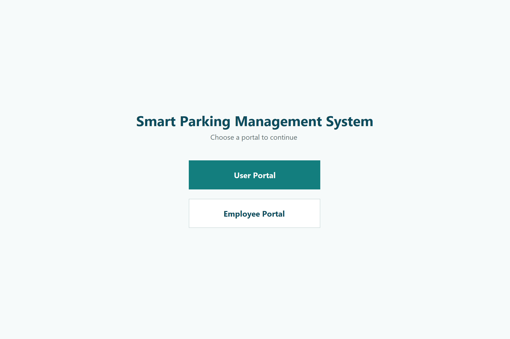
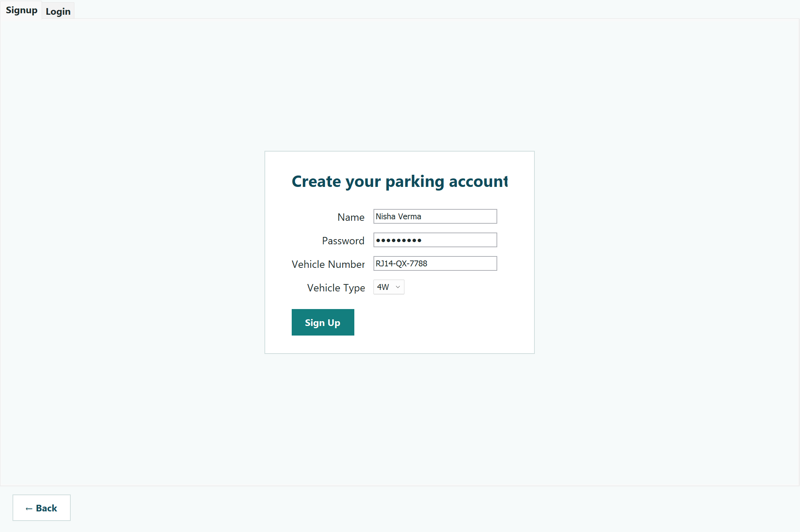
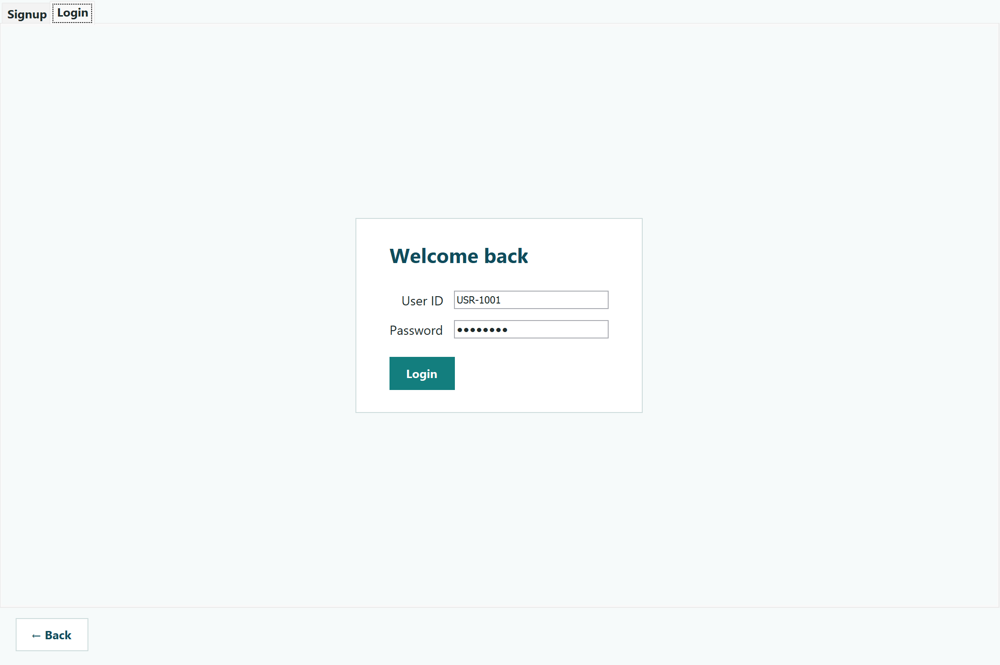
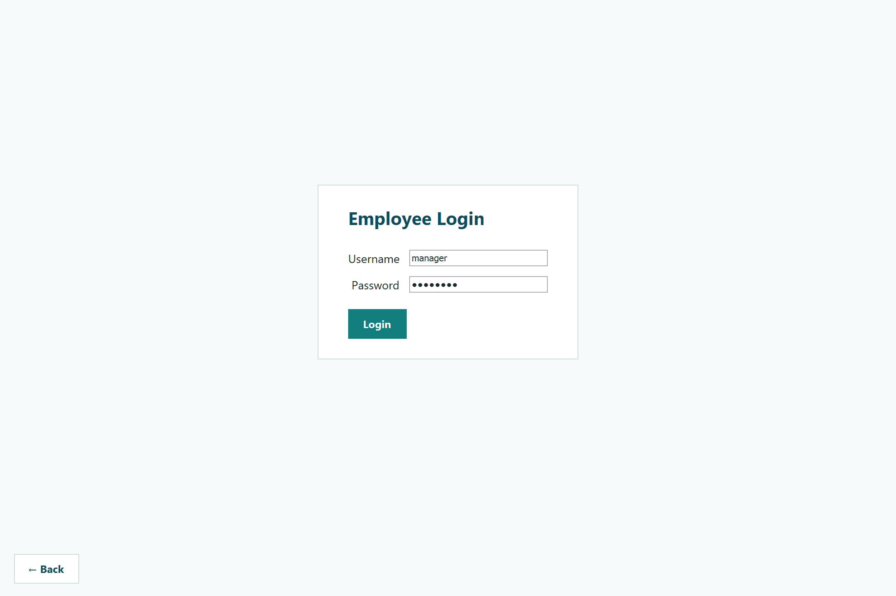
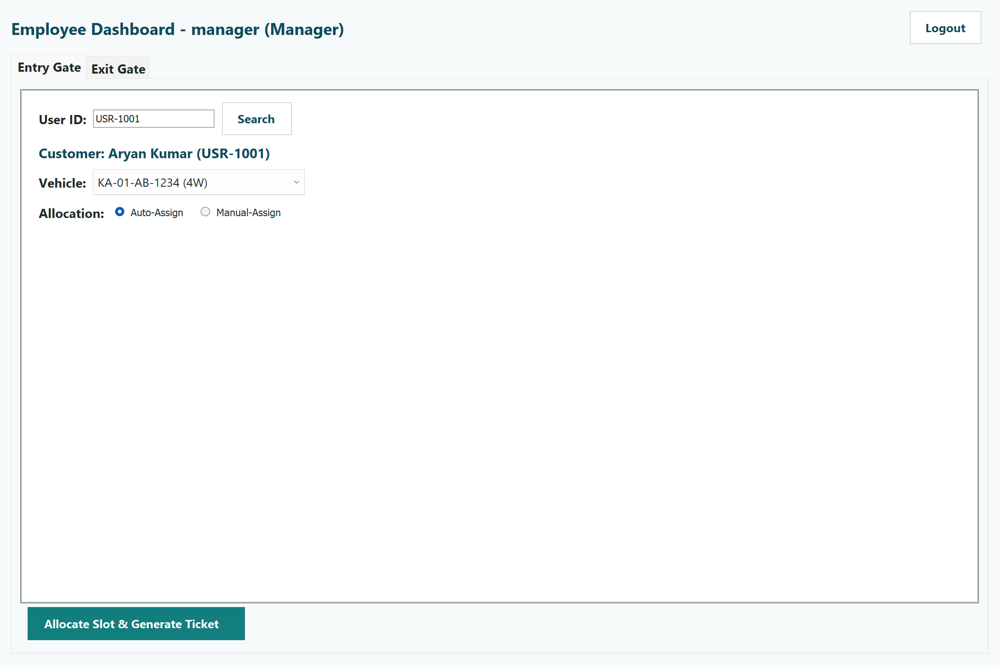
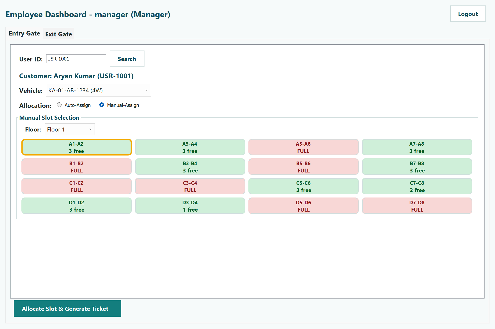
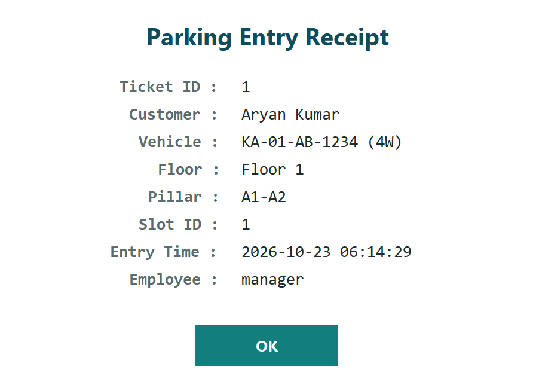
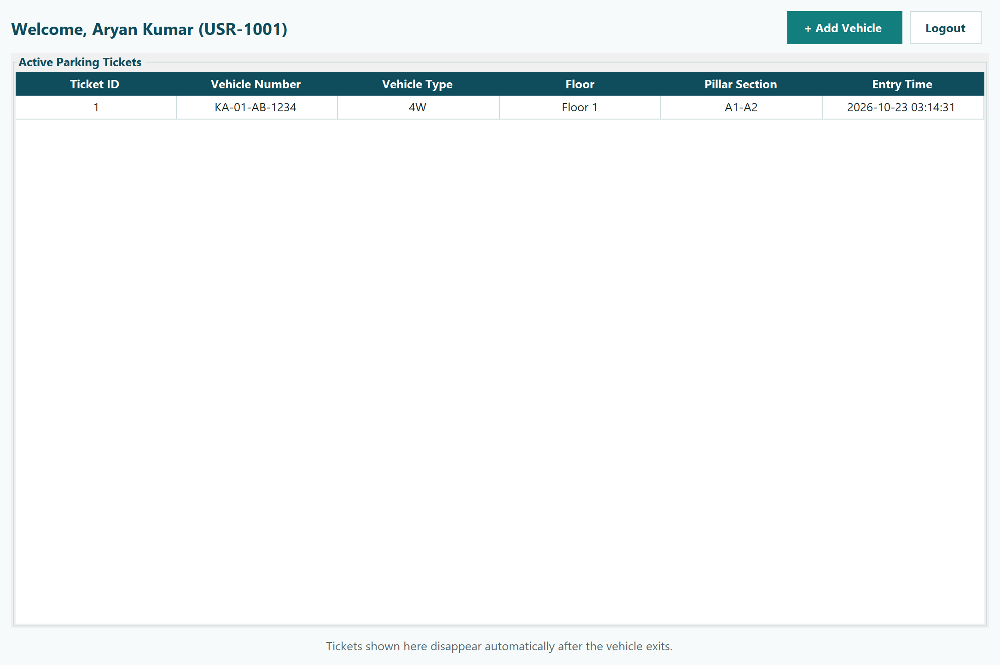
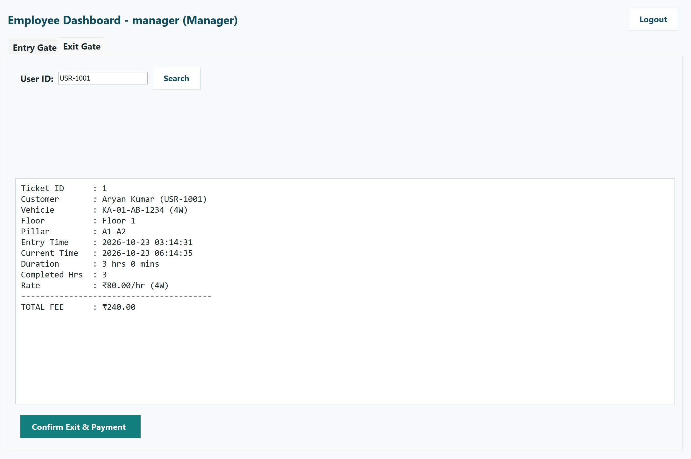
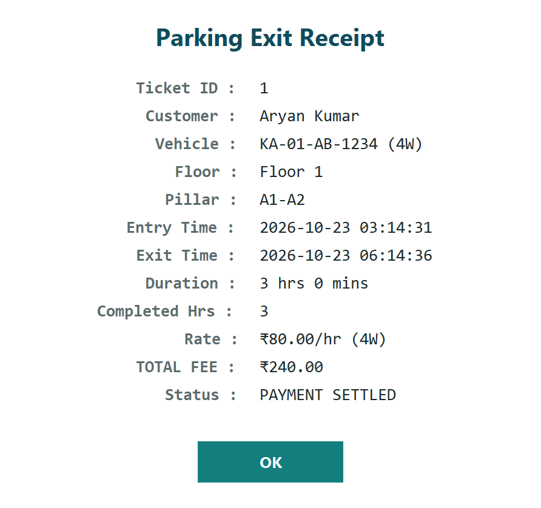
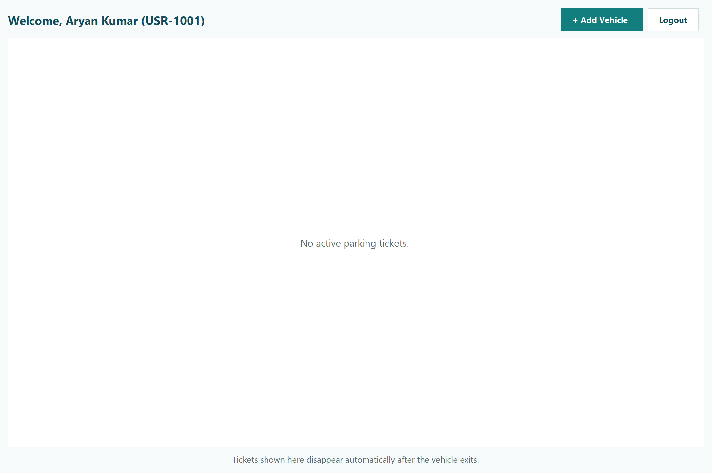
The tables below are rendered from the live database with the same queries the application uses; they are not mock-ups. Column headings match the physical schema.
| user_id | name | created_at |
|---|---|---|
USR-1001 | Aryan Kumar | 2026-10-23 06:14:18 |
USR-1093 | Fatima Sheikh | 2026-10-23 06:14:18 |
USR-1187 | Karan Malhotra | 2026-10-23 06:14:18 |
USR-1294 | Ishita Bose | 2026-10-23 06:14:18 |
USR-1358 | Vikram Joshi | 2026-10-23 06:14:18 |
USR-1467 | Sanjay Gupta | 2026-10-23 06:14:18 |
USR-1573 | Meera Iyer | 2026-10-23 06:14:18 |
USR-2045 | Priya Sharma | 2026-10-23 06:14:18 |
USR-3782 | Rahul Verma | 2026-10-23 06:14:18 |
USR-4510 | Sneha Patel | 2026-10-23 06:14:18 |
USR-5267 | Amit Singh | 2026-10-23 06:14:18 |
USR-6104 | Neha Kulkarni | 2026-10-23 06:14:18 |
USR-7321 | Rohan Mehta | 2026-10-23 06:14:18 |
USR-8401 | Nisha Verma | 2026-10-23 06:14:22 |
USR-8456 | Divya Nair | 2026-10-23 06:14:18 |
USR-9572 | Arjun Rao | 2026-10-23 06:14:18 |
Sixteen customer accounts: the fifteen seeded demonstration accounts plus the one created during the run captured above. Identifiers are generated by the application and are never reused.
| vehicle_number | user_id | type |
|---|---|---|
DL-03-GH-3456 | USR-3782 | 2W |
DL-03-IJ-7890 | USR-3782 | 4W |
GJ-04-KL-1122 | USR-4510 | 2W |
GJ-04-MN-7788 | USR-4510 | 2W |
GJ-05-QR-7788 | USR-7321 | 2W |
GJ-05-ST-9900 | USR-7321 | 4W |
KA-01-AB-1234 | USR-1001 | 4W |
KA-01-CD-5678 | USR-1001 | 2W |
KA-01-EF-9012 | USR-1001 | 4W |
KL-07-UV-4455 | USR-8456 | 4W |
MH-02-EF-9012 | USR-2045 | 4W |
MH-02-GH-3456 | USR-2045 | 2W |
MH-12-XY-1122 | USR-6104 | 4W |
MH-12-ZA-3344 | USR-6104 | 2W |
PB-11-CD-7788 | USR-1187 | 4W |
RJ-14-GH-1234 | USR-1358 | 4W |
RJ-14-IJ-5678 | USR-1358 | 2W |
RJ14-QX-7788 | USR-8401 | 4W |
TN-09-WX-6677 | USR-9572 | 2W |
TN-19-MN-3690 | USR-1573 | 2W |
TN-19-OP-8021 | USR-1573 | 4W |
TS-09-AB-5566 | USR-1093 | 2W |
TS-09-YZ-2233 | USR-1093 | 4W |
UP-05-MN-3344 | USR-5267 | 4W |
UP-05-OP-5566 | USR-5267 | 2W |
UP-05-QR-1123 | USR-5267 | 4W |
UP-18-KL-2468 | USR-1467 | 4W |
WB-12-EF-9900 | USR-1294 | 2W |
Twenty-eight registered vehicles. The plate is the primary key, so the same vehicle cannot be registered twice under different customers.
| Floor | Pillar section | 2W bays | 4W bays | Occupancy |
|---|---|---|---|---|
| 1 | A1-A2 | 0 | 3 | free |
| 1 | A3-A4 | 0 | 3 | free |
| 1 | A5-A6 | 3 | 0 | free |
| 1 | A7-A8 | 0 | 3 | free |
| 1 | B1-B2 | 3 | 0 | free |
| 1 | B3-B4 | 0 | 3 | free |
| 1 | B5-B6 | 3 | 0 | free |
| 1 | B7-B8 | 0 | 3 | free |
| 1 | C1-C2 | 3 | 0 | free |
| 1 | C3-C4 | 3 | 0 | free |
| 1 | C5-C6 | 0 | 3 | free |
| 1 | C7-C8 | 1 | 2 | free |
| 1 | D1-D2 | 0 | 3 | free |
| 1 | D3-D4 | 2 | 1 | free |
| 1 | D5-D6 | 3 | 0 | free |
| 1 | D7-D8 | 3 | 0 | free |
Bay types are assigned per section at seed time, so the mix is irregular: some sections are entirely four-wheeler, some entirely two-wheeler, and others hold both. This is what the grid in Figure 7.7 displays as "2 free", "1 free" or FULL. The three floors hold 144 bays in total, split evenly between the two vehicle types.
| ticket | vehicle | slot | employee | entry_time | exit_time | total_fee |
|---|---|---|---|---|---|---|
1 | KA-01-AB-1234 | 1 | 1 | 2026-10-23 03:14:31 | 2026-10-23 06:14:37 | 240.00 |
A single closed session remains from the demonstration run. The amount equals three
commenced hours at the ₹80 four-wheeler rate; the first hour was free and the partial minute is
rounded up to the next commenced hour. The corresponding slot row is back to
is_occupied = FALSE.
The project set out to show that a parking facility can be operated from a relational database and an ordinary desktop application, without barrier gates, sensors or tags. That goal has been met: the delivered build performs registration, gate operations, allocation, billing and receipting against a normalised MySQL schema, and every screen reads and writes live data.
Three design decisions carried most of the weight. First, availability is derived, never duplicated: the only stored fact is whether a bay is occupied, so the grid and the automatic allocator can never disagree with each other. Second, each gate operation is one transaction: a ticket is inserted and a bay is flipped in the same commit, and the bay is re-checked inside that transaction, which makes double allocation impossible even if two attendants act at the same moment. Third, the tariff is a function of the data: the rate is resolved from the vehicle type on the ticket rather than being hard-coded per screen, so a customer who arrives in a different vehicle on a later day is priced correctly with no code change.
The visual pillar grid deserves a note because it is the part most often missing from
database coursework. A table of slots is easy to render as a list; rendering it as a floor plan
that an attendant can read at a glance requires the free-bay count per section to be a cheap
grouped query, which in turn justified the composite index on
(floor_id, pillar_section, slot_type).
| Direction | What it would add |
|---|---|
| Online payments | A payment gateway at settlement, with the ticket storing a transaction reference and a settled/failed state. |
| Reservations | A reservation window on a bay, protected by the same transactional re-check used at the entry gate. |
| Reporting | Revenue per floor, per hour and per vehicle type, plus average occupancy, driven from ParkingTickets over a date range. |
| Hardware integration | ANPR or RFID at the gate to remove the identifier lookup, keeping the same service layer beneath. |
| Security | Password hashing (currently stored as plain text for demonstrability) and role-based separation of manager and attendant actions. |
The work consolidated practical database design — normalisation, referential integrity and index selection — with the discipline of writing code that cannot leave the database in an inconsistent state when something fails midway. It also required a layered Java codebase (model, DAO, view) that keeps SQL out of the user interface.
ENUM
and INFORMATION_SCHEMA. Available at: https://dev.mysql.com/doc/refman/8.0/en/